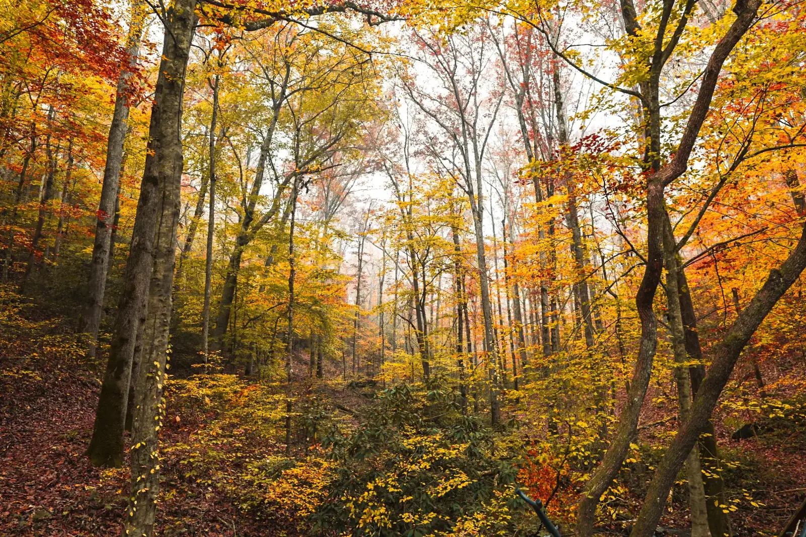

Questions
Everything you're wondering. And a few things you haven't thought of yet.
Yes. It was engineered and built by an elite team of arborists and riggers, and Mick walks it daily. It carries over two hundred guests a year, and nobody has ever turned back. It sways, by design. It's the most photographed, most talked-about, most life-changing sixty seconds of your stay.
Some of our best reviews come from guests who were terrified. The bridge is built to feel safe: the ropes are chest-high, the planks are solid, and the sway is gentle. A thirty-foot rope bridge comes first, as a warm-up. Most guests who are nervous on the first crossing are running across it by the second. We've never had a guest who regretted coming.
The treehouse sleeps 4 comfortably, and up to 6 guests in all. Children are welcome. No smoking.
Yes. Up to two well-behaved dogs are welcome, and there is no fee. Dogs only, please. Know the way in before you decide: the hundred-foot rope bridge sways, and it sits sixty feet up. If you're not sure how your dog will take it, write to us before you book and we'll talk it through. We want every guest, two-legged and four-legged, to be safe and comfortable at sixty feet.
Luxury linens and towels. Heat for the cold seasons, and the canopy's own cooling in summer. A fully equipped kitchen. A private deck. A fire pit on the forest floor. Trails across 42 acres. TreeMail: fresh morning pastries in the box where you enter the bridges, around 8:30 every morning, unless you've booked the Dawn Table or Morning Moments. And silence. We don't include televisions. On purpose.
Comfortable shoes for the trails. Layers, because mountain weather changes. A book you've been meaning to read. Groceries if you plan to cook. A willingness to do absolutely nothing.
Heated for the cold seasons. In summer the canopy itself is the climate system: the cove forest runs cooler than the valley floor, and the windows open to a cross-breeze sixty feet up. No compressor hum, no recycled air, just a forest that's been cooling itself for a few hundred years. You're suspended inside it.
Yes. But we encourage you not to use it.
Rain in the mountains is its own kind of magic. The treehouse is heated, with the canopy's natural cooling in summer, and the canopy gives the deck natural protection. We've hosted guests in every kind of weather, and the reviews always say the same thing: worth it.
We're just over an hour north of Atlanta, in the foothills above Dahlonega. Detailed directions come with your booking confirmation. The last mile is a mountain road. That's how you know you're close.
Your booking agreement, shown in full before you pay, covers changes and cancellations.
Possibly the best place to do it. We've hosted hundreds. Add our Romance Package or Celebration Package, or ask about custom arrangements. See the experiences.
Yes. Three packages and three ceremony spaces, the rope bridge among them. See the elopements page for details.
Best rate guaranteed. You're booking with the family who built this place, not a platform. If you find a lower price anywhere, we'll match it and add a complimentary experience to your stay.
Ask us
Still have questions? Mick or Livy will answer.
Not a chatbot. We'll get back to you within a few hours.
The forest knows you're coming. We'll be in touch soon.
Mick & Livy